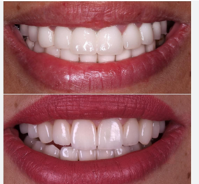
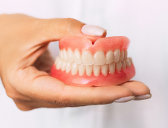
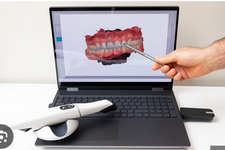

كيف تختار بين الزيركون والإيماكس؟
تعرف على الفرق بين المواد واستخداماتها لاختيار التركيبة المناسبة لكل حالة.
مقالات ونصائح تساعدك على تحسين عملك وتطوير مهاراتك داخل العيادة.

تعرف على الفرق بين المواد واستخداماتها لاختيار التركيبة المناسبة لكل حالة.
تجنب الأخطاء التي تؤثر على دقة النتائج وسرعة تنفيذ العمل المخبري.

دليل مبسط لاختيار الأطقم الكاملة أو الجزئية حسب احتياج المريض.

تعرف على كيفية استخدام التقنيات الرقمية في تصميم الابتسامة وتحسين النتائج.
حوّل معرفتك إلى نتائج حقيقية داخل عيادتك باستخدام حلول لازورد الرقمية.
ابدأ الآن